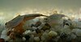

notostraca

Definition: The order Notostraca, containing the single family Triopsidae, is a group of crustaceans known as tadpole shrimp or shield shrimp. The two genera, Triops and Lepidurus, are considered living fossils, with similar forms having existed since the Devonian. They have a broad, flat carapace, which conceals the head and bears a single pair of compound eyes. The abdomen is long, appears to be segmented and bears numerous pairs of flattened legs. The telson is flanked by a pair of long, thin caudal rami. Phenotypic plasticity within taxa makes species-level identification difficult, and is further compounded by variation in the mode of reproduction. Notostracans are omnivores living on the bottom of temporary pools and shallow lakes.
Source: Wikipedia
Wikipedia Page (Something wrong with this association? Let us know.)
Wikidata Page (Something wrong with this association? Let us know.)